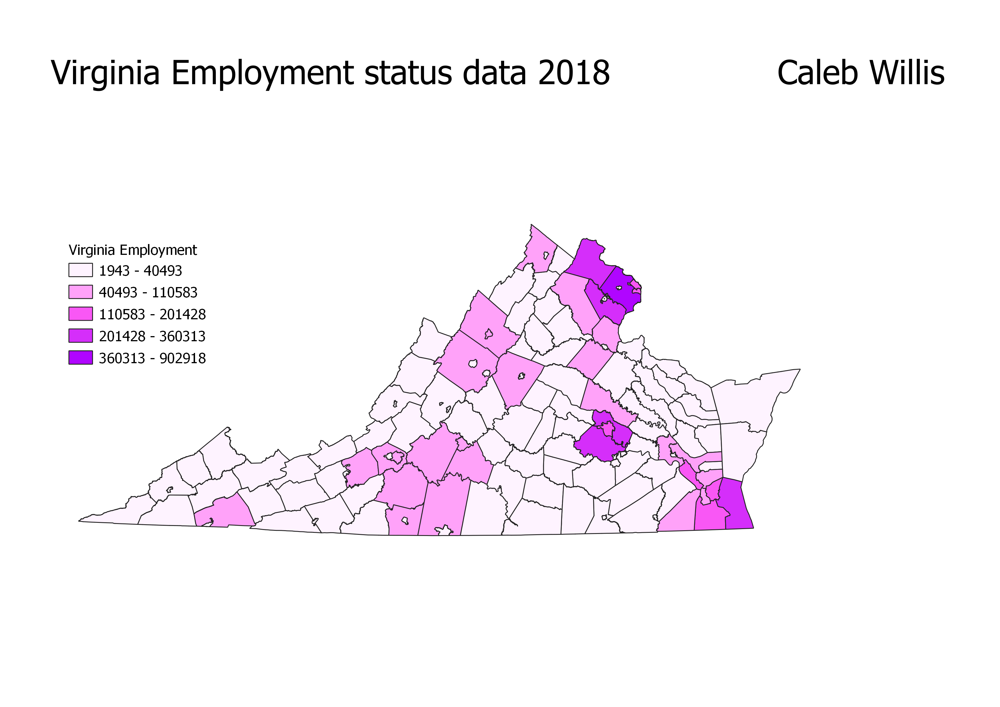

Homework 7: Employment Data of Virginia in 2018
Caleb Willis
This map displays the employment status for the entire state of Virginia on 2018.
It is interesting to see how the counties with the highest amount of employment are
the areas we are likely more familiar with. Namely, Richmond, Washington, and the Chesapeake. This is makes since because
these areas are the most developed areas and some like Washington and the Chesapeake are able to
attract tourest and national attention (for example the ecological significance of the Chesapeake bay).
